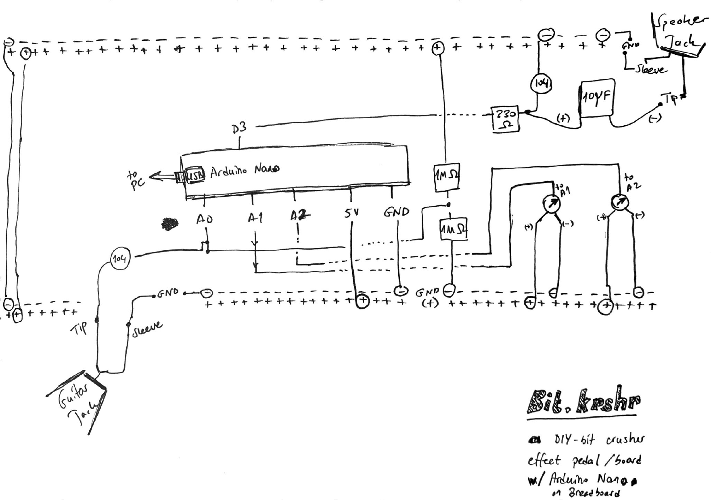

Bit.krshr
a DIY effect pedal on an Arduino Nano-compatible board
(ELEGOO
Nano V3, ATmega328P)
A lo-fi bit crusher for electric guitar, built on a breadboard and
programmed in C++.
I started it to learn C/C++ with a project
I actually want to play.
Demo and prototype


What it does
The guitar signal is read by the Nano's analog-to-digital converter, degraded in software, and sent back out as PWM. Two knobs shape the sound:
- Bit depth (pin A1): from 8 bits down to 1 bit. Fewer bits mean a rougher, more distorted signal.
- Sample rate (pin A2): how many times per second the signal is measured. Fewer measurements make the sound muffled and metallic.
Circuit diagram

My hand-drawn circuit diagram, version 1.
The same circuit as ASCII art
Redrawn with help of an AI-agent as plain text. Nets with the same name, like +5V, GND and A0, are connected. The 10 µF capacitor has its (+) side on the filter and its (-) side on the speaker jack.
Bit.krshr
DIY bit crusher effect pedal w/ Arduino Nano-compatible on breadboard
(Nano is powered over USB from the PC)
INPUT
-----
+5V
|
[1M]
|
GUITAR TIP ---[104]------+---------------> A0
|
[1M]
|
GND
GUITAR SLEEVE ---------------------------> GND
CONTROLS
--------
+5V +5V
| |
+--+--+ +--+--+
| POT |----> A1 | POT |----> A2
| 1 | (bit depth) | 2 | (sample rate)
+--+--+ +--+--+
| |
GND GND
OUTPUT
------
D3 ---[330]------+-----(+) 10uF (-)-----> SPEAKER JACK TIP
|
[104]
|
GND
SPEAKER JACK SLEEVE ----------------------> GNDSignal path
- Input: the guitar tip goes through a 104 (100 nF) capacitor. Two 1 MΩ resistors hold the signal at about 2.5 V, so the Nano can read the negative half of the waveform.
-
Read:
analogRead(A0)returns a number from 0 to 1023. The code estimates the DC level and subtracts it, which leaves only the audio. - Crush: a sample-and-hold lowers the sample rate, and bit shifting lowers the bit depth.
- Output: Timer2 generates fast PWM at 62.5 kHz on pin D3. A 330 Ω resistor and a 104 capacitor smooth it, and a 10 µF capacitor blocks the DC before the speaker jack.
Parts
- Arduino Nano-compatible board (ELEGOO Nano V3, ATmega328P)
- Breadboard and jumper wires
- 2 × 6.3 mm jack sockets (input and output)
- 2 × 1 MΩ resistors (bias)
- 1 × 330 Ω resistor (output filter)
- 2 × 104 ceramic capacitors (input coupling, output filter)
- 1 × 10 µF electrolytic capacitor (output DC blocking)
- 2 × trimpots (bit depth, sample rate)
What I learned
-
C and C++ types have fixed sizes: on the Nano an
intis only 16 bits, and overflows fail silently. -
Bitwise operators (
&,|,<<,>>) and how to set hardware registers with them. - The difference between DC and AC, and why a guitar signal needs a bias before an ADC can read it.
- Debugging hardware: floating pins, a reversed electrolytic capacitor, and loose breadboard contacts.
Next steps
Replace the trimpots with panel potentiometers, add a footswitch, solder the circuit, and put it in a pedal enclosure. A second effect on another chip is planned.